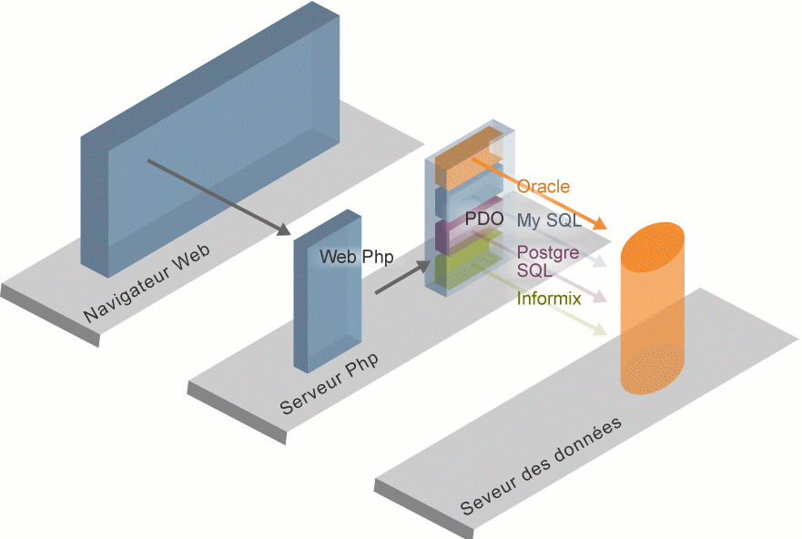

V - Accéder à une base de données
A - Introduction
Vous connaissez à présent les bases du langage PHP et vous savez transmettre des informations d'une page à une autre. Cependant, il nous reste à étudier le moyen de stocker des données de manière persistante. Ainsi, nous pourrons mémoriser les informations saisies par les utilisateurs, ou bien construire des pages dynamiques à partir des données externes.
Définition
Une donnée est dite persistante lorsqu'elle survit à l'arrêt du logiciel ou de la machine qui la manipule. Le contraire de "persistante" est "volatile".
Actuellement, la technique la plus utilisée pour rendre des données persistantes consiste à les sauvegarder dans un logiciel dédié appelé SGBDR ou Système de Gestion de Bases de Données Relationnelles. Parmi les SGBDR les plus connus, citons MySQL, PostgreSQL ou encore ORACLE.
Nous allons donc étudier comment interagir avec un SGBDR depuis une page PHP. Pour cela, nous allons utiliser une extension récente du langage PHP appelée PDO (Php Data Objects). Par rapport aux autres solutions existantes, PDO possède le double avantage d'être orientée objet et d'être indépendante du SGBDR utilisé.
Le schéma ci-dessous décrit l'architecture que nous allons mettre en oeuvre. Il s'agit d'un exemple d'architecture trois tiers (client, serveur Web, SGBD). Le rôle de PDO va être de faire le lien entre les pages PHP du serveur et les données stockées dans le SGBDR.
